1차
스킬 도감
속성을 선택해 단계별 마법과 실제 게임 아이콘을 확인하세요.
화염 마법
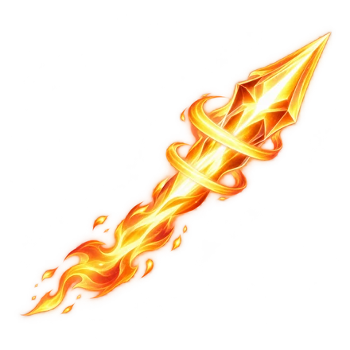
2차
화염창
선행 마법 · 파이어볼
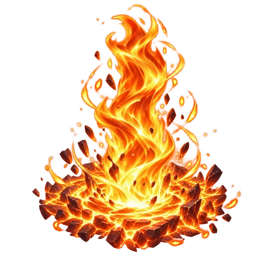
3차
화염기둥
선행 마법 · 파이어볼
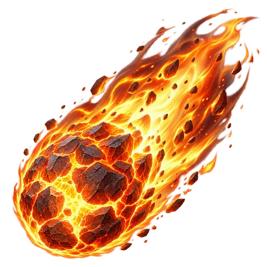
4차
메테오
선행 마법 · 화염기둥
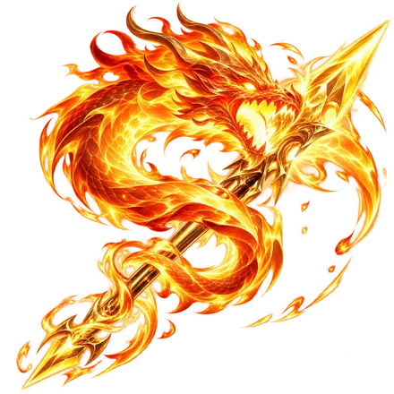
궁극기
종염 관통
선행 마법 · 메테오
물 마법
1차
물탄
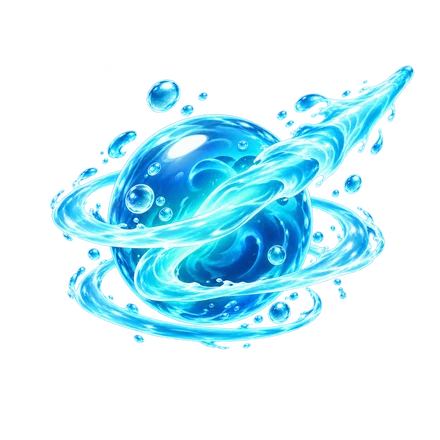
2차
수압탄
선행 마법 · 물탄
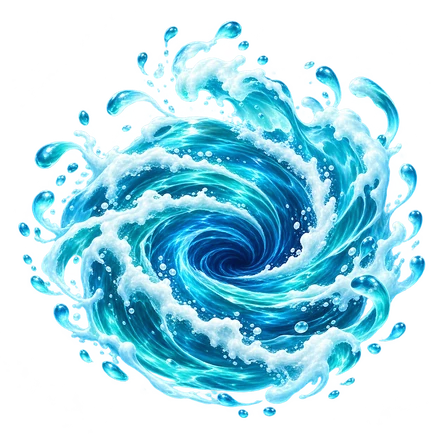
3차
소용돌이
선행 마법 · 물탄
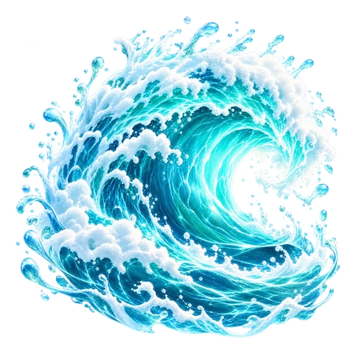
4차
해일
선행 마법 · 소용돌이
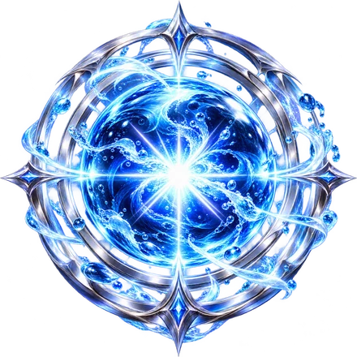
궁극기
심해 압살
선행 마법 · 해일
얼음 마법
1차
고드름
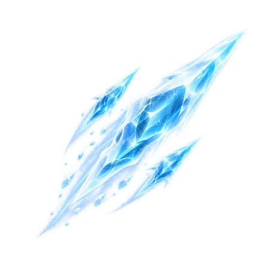
2차
빙결창
선행 마법 · 고드름
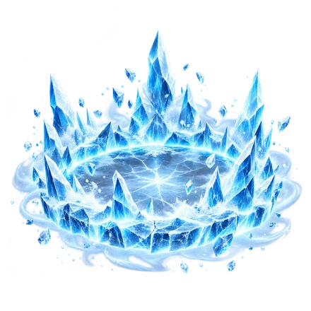
3차
빙결진
선행 마법 · 고드름
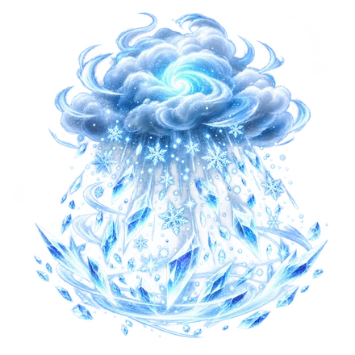
4차
블리자드
선행 마법 · 빙결진
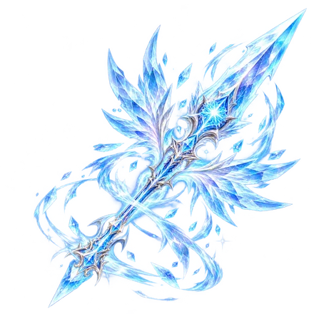
궁극기
영겁의 빙창
선행 마법 · 블리자드
번개 마법
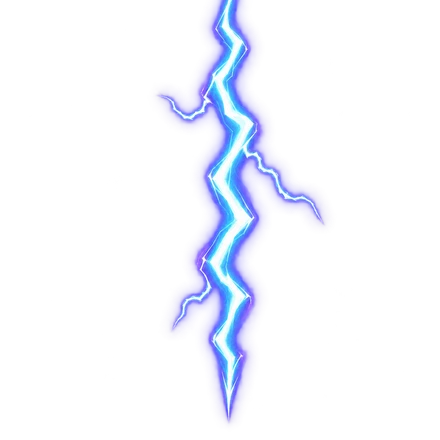
1차
벼락
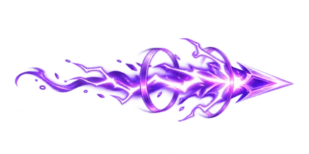
2차
전류탄
선행 마법 · 벼락
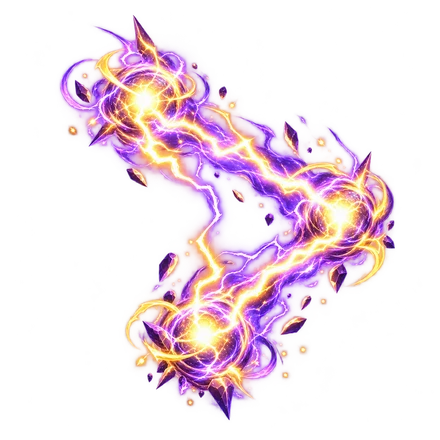
3차
벼락진
선행 마법 · 벼락
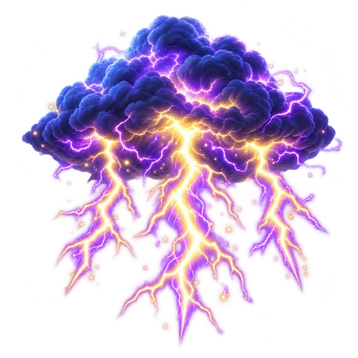
4차
번개폭풍
선행 마법 · 벼락진
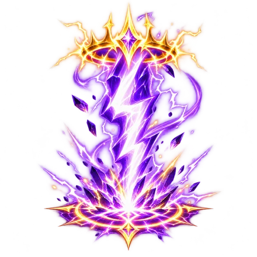
궁극기
천벌의 일격
선행 마법 · 번개폭풍
대지 마법
1차
암석탄
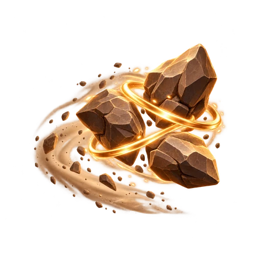
2차
암석쇄도
선행 마법 · 암석탄
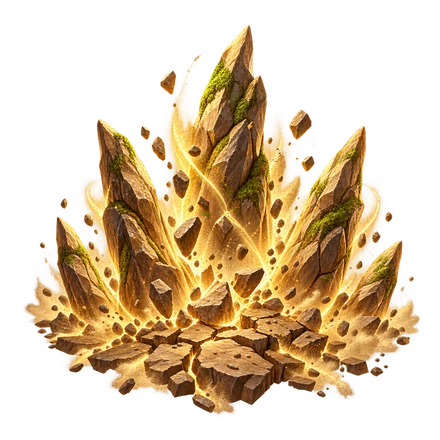
3차
암석분출
선행 마법 · 암석탄
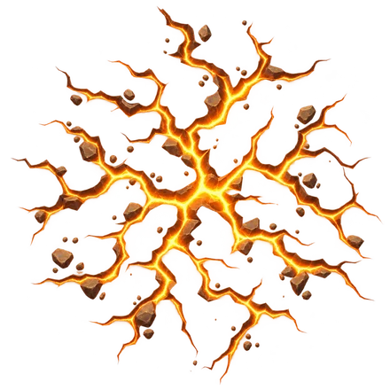
4차
지진
선행 마법 · 암석분출
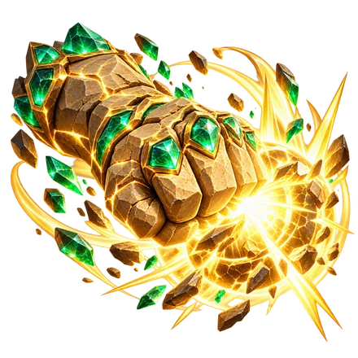
궁극기
대지핵 파쇄
선행 마법 · 지진
5원소 융합 마법
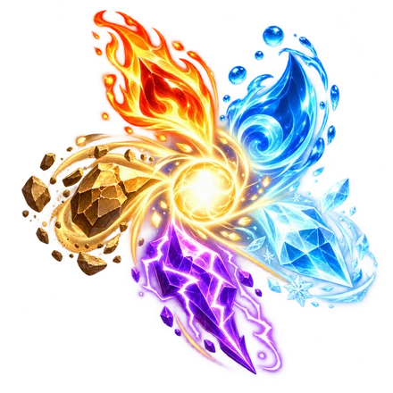
1차
원소탄
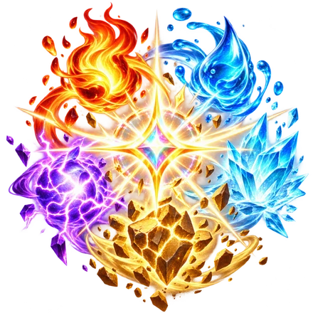
2차
원소 공명
선행 마법 · 원소탄
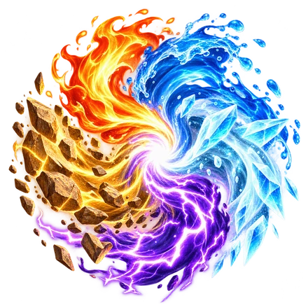
3차
융합 폭풍
선행 마법 · 원소 공명
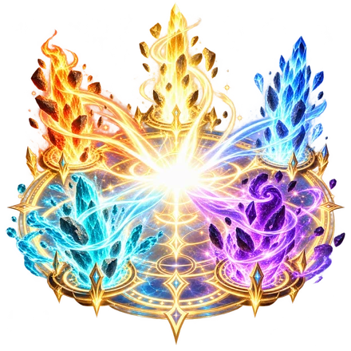
4차
오원소 대붕괴
선행 마법 · 융합 폭풍
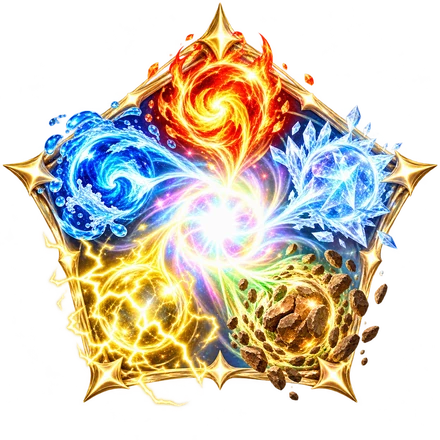
궁극기
오원소 종극
선행 마법 · 오원소 대붕괴